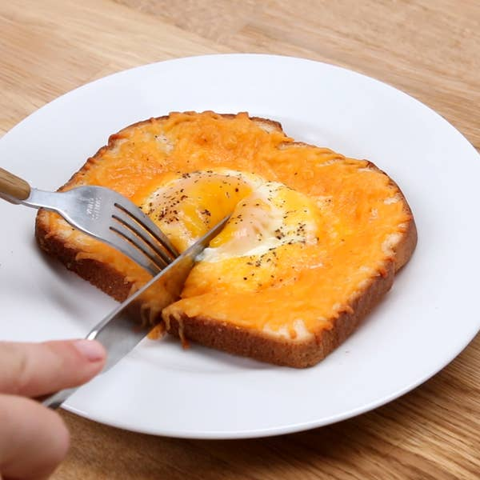

Cheesy Egg Toast
Prep. Time :
15 mins
Yield :
1 slice
Ingredients
1 slice bread
½ tablespoon butter
3 tablespoons shredded cheese
1 egg
salt, to taste
pepper, to taste
Steps
With a spoon, press down on the center of the bread to form a pocket.
Line the edges of the bread with butter, and crack an egg into the pocket.
Line the edges of the bread with shredded cheese.
Sprinkle on salt and pepper, and bake at 400°F (204°C) for 10-15 min. 10 min will have a runny yolk whereas 15 min will have a firmer yolk.